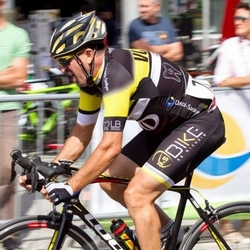
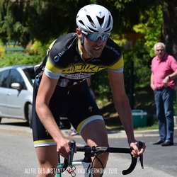
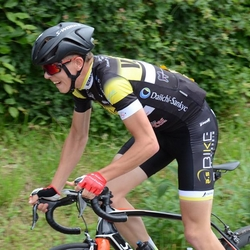
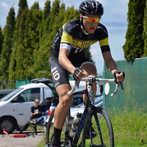
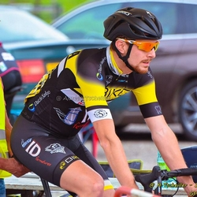
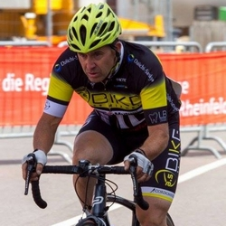

|
 |
 |
 |
| Alain L. Pass' D1 |
Antoine M. Pass' D1 |
Brieuc H. Pass' D1 |
Cédric L. 3ème caté |
|  |  |
 |
 |
| Claude S. Pass' D3 |
Daniel F. 3ème caté |
Eric H. 3ème caté |
Florian K. 3ème caté |
 |
 |  |
 |
| Florian V. Pass' D1 |
Guillaume A. Pass' D1 |
Guillaume P. Pass' D1 |
Jérome H. Junior |
 |
 |
 |
 |
| Jerome J. Pass' D1 |
Johann V. Cadet |
José L. 3ème caté |
Julien B. 3ème caté |
|  |  |
 |
 |
| Jerome G. 3ème caté |
Kevin E. 3ème caté |
Lucien H. S4 (FSGT) |
Ludovic K. 2ème caté |
 |
 |  |
 |
| Mathieu N. 3ème caté |
René S. Pass' D3 |
Philippe W. Pass' D1 |
Lucien H. 3ème catés |
Un grand merci à Aurélie Tscheiller et à Au Fil des Instants pour les photos.